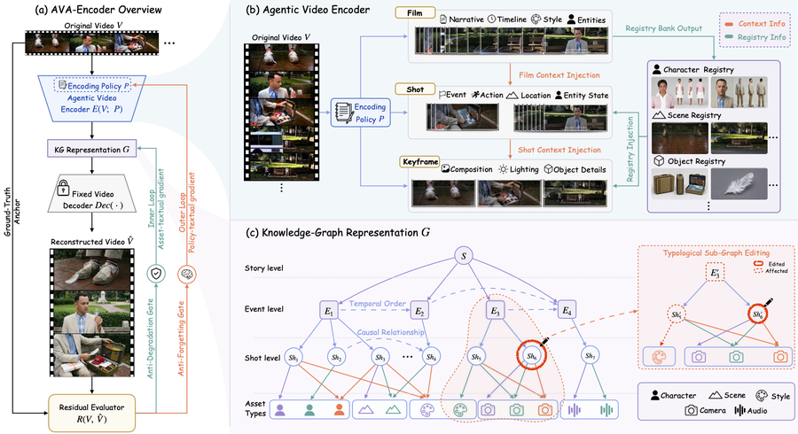
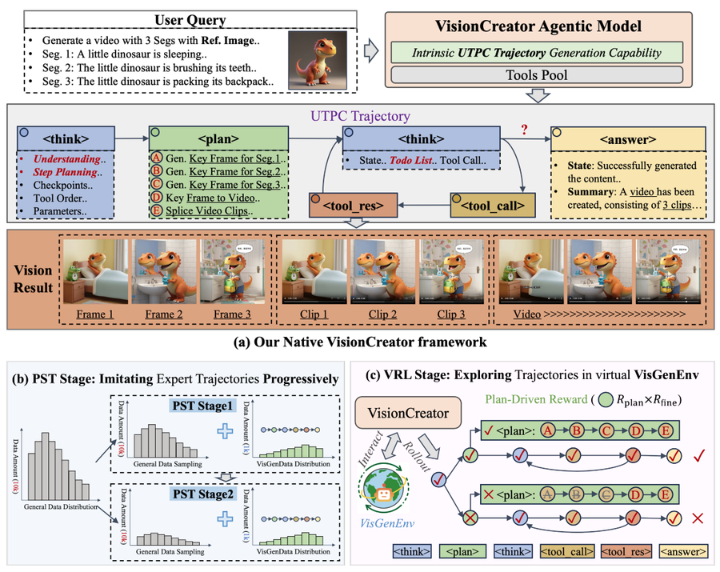
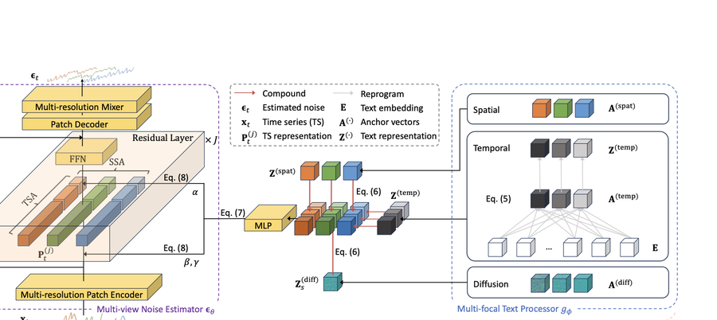
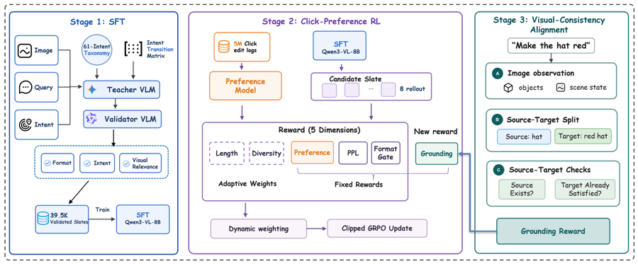
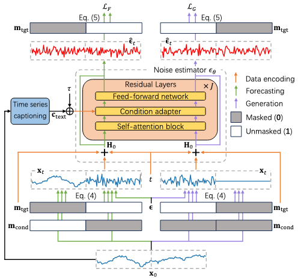

I am Chuyue Li, and I work on multimodal agents.
I build them with self-evolving agents and agentic RL, for tasks across multimodal generation, understanding and reasoning.
Currently a first-year MSCS student at the University of Illinois Urbana-Champaign, after a CS undergraduate degree at ShanghaiTech University and a junior-year exchange at UC Berkeley. I have been a research intern at Alibaba Qwen and Tencent Hunyuan, and a research assistant at the ShanghaiTech VDI Center.
Directions I have worked on:
- Self-evolving agents for video understanding & representation learning — first-author work in the AIGC team at Alibaba Qwen.
- Agentic RL for image and video generation — research intern in the Multimodal Model Department at Tencent Hunyuan.
- Multimodal time series conditional diffusion generation, and LLMs for code and coding agents.
- Agentic RL & self-evolving agents
- Multimodal generation
- Video representation learning
- Reasoning & planning
- Evaluation & reward design
News
Started my MSCS at UIUC.
AVA-Encoder: Towards Agent-Native Video Representation Learning submitted — first author, work done at Alibaba Qwen.
VisionCreator accepted to CVPR 2026 Findings.
VerbalTS: Generating Time Series from Texts accepted to ICML 2025.
Completed a junior exchange year at UC Berkeley.
Publications & Manuscripts
My name in bold. Author ordering follows each manuscript.
-

Under reviewAVA-Encoder: Towards Agent-Native Video Representation Learning
Videos encoded as structured knowledge graphs and reconstructed by a fixed decoder, optimized through textual-gradient feedback. 49.0% reconstruction fidelity (+20.7 abs. over baseline) with 74.3% fewer tokens.
-

CVPR 2026VisionCreator: A Native Visual-Generation Agentic Model with Understanding, Thinking, Planning and Creation
Accepted to CVPR 2026 Findings. Multi-turn, auto-planning multi-agent collaboration for professional image and video deliverables.
-

ICML 2025VerbalTS: Generating Time Series from Texts
Multi-view noise estimation and a multi-focal text processor for fine-grained text-to-time-series control. FID, J-FTSD and CTTP improved by 20%+ over baselines.
-

Under reviewWhat to Edit Next: Visually Aligned Image-Editing Follow-Up Suggestions in Conversational Systems
-
Under review
PyMETA: A Benchmark Dataset for Hierarchical Student Code Error Classification with Python-Interpreter-Based Labels
A multi-level taxonomy and 40,000-error benchmark for student Python code, with single- and multi-error detection across seven model architectures.
-

Under reviewUnified Generative Modeling for Multimodal Time Series Analysis
GenTS casts conditional generation, forecasting and editing as one masked-conditional generation problem under a shared noise estimator.
Research Experience
-
Self-Evolving Agent for Video Understanding and Representation Learning
Visual Technology Dept., AIGC Team · Mentors: Jingpeng Yu, Jiaming Liu
- Pioneered agentic video auto-encoding: videos are represented as a structured knowledge graph, encoded by an agent and reconstructed by a fixed decoder, with the whole system optimized by textual-gradient feedback on reconstruction consistency.
- Designed a hierarchical agentic encoder and a dual-loop optimizer — an outer loop with an anti-forgetting gate for transferable encoding policies, an inner loop with an anti-degradation gate for test-time KG refinement.
- Reached SOTA reconstruction fidelity (49.0%, +20.7 absolute); the self-learned policy beat the human-tuned one (45.8% vs. 44.4%) while cutting tokens by 74.3% (shot) and 70.1% (keyframe).
-
Multi-level Auto-Planning Interactive Visual Generative Agent
Multimodal Model Dept., Visual Agent Team · Mentor: Rongwei Quan
- Built a multi-turn interactive, auto-planning, multi-agent collaboration system producing professional-grade image and video deliverables.
- Implemented intent recognition, hierarchical planning, multimodal understanding, self-reflection, multimodal deep search, RAG and fine-grained selection among similar tools.
- Independently led the automatic evaluation system and reward design for long-trajectory planning, tool invocation and non-verifiable visual outputs.
-
LLMs for Multi-level Coding Error Classification
Supervisors: Kazuma Hashimoto, Lingyu Gao
- Designed a fine-grained, multi-level taxonomy of Python error types for web-based online compilers, and built a benchmark over 40,000 real-world errors covering single- and multi-error cases.
- Improved multi-level detection through fine-tuning and prompting, leveraging real error patterns and unstructured debugging logs.
- Analyzed bias, capability limits and confidence across seven model architectures under increasing error granularity.
-
Multimodal Time Series Conditional Generation from Unstructured Text
Supervisor: Kan Ren · ICML 2025
- Designed a framework for finer-grained cross-modal semantic alignment and control when generating time series from unstructured text.
- Built a multi-view noise estimator (temporal, spatial, diffusion) and a multi-focal text processor with learnable anchor vectors and reprogramming-based alignment.
- Proposed the CTTP model and score; improved FID, J-FTSD and CTTP by 20%+ over baselines.
-
Unified Model for Multimodal Time Series Generation, Prediction and Editing
Supervisor: Kan Ren
- Proposed GenTS, unifying conditional generation, forecasting and editing as a single masked-conditional generation problem.
- Designed a unified noise estimator for cross-task generative capability and adaptive multimodal modeling.
- Introduced domain-agnostic automated time series captioning from statistical and morphological features, addressing the scarcity of paired multimodal data.
Education
-
2026.08 — 2028.06
University of Illinois Urbana-Champaign
M.S. in Computer Science (MSCS) · first year
-
2024.08 — 2025.05
University of California, Berkeley
Computer Science, junior exchange
-
2022.09 — 2026.06
ShanghaiTech University
B.S. in Computer Science